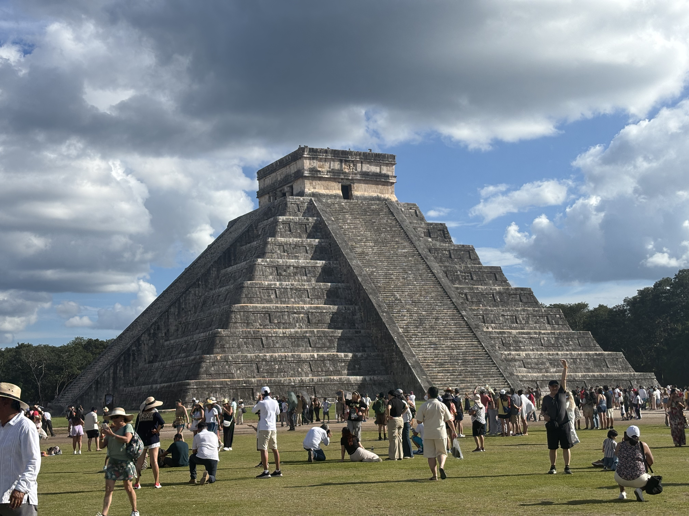
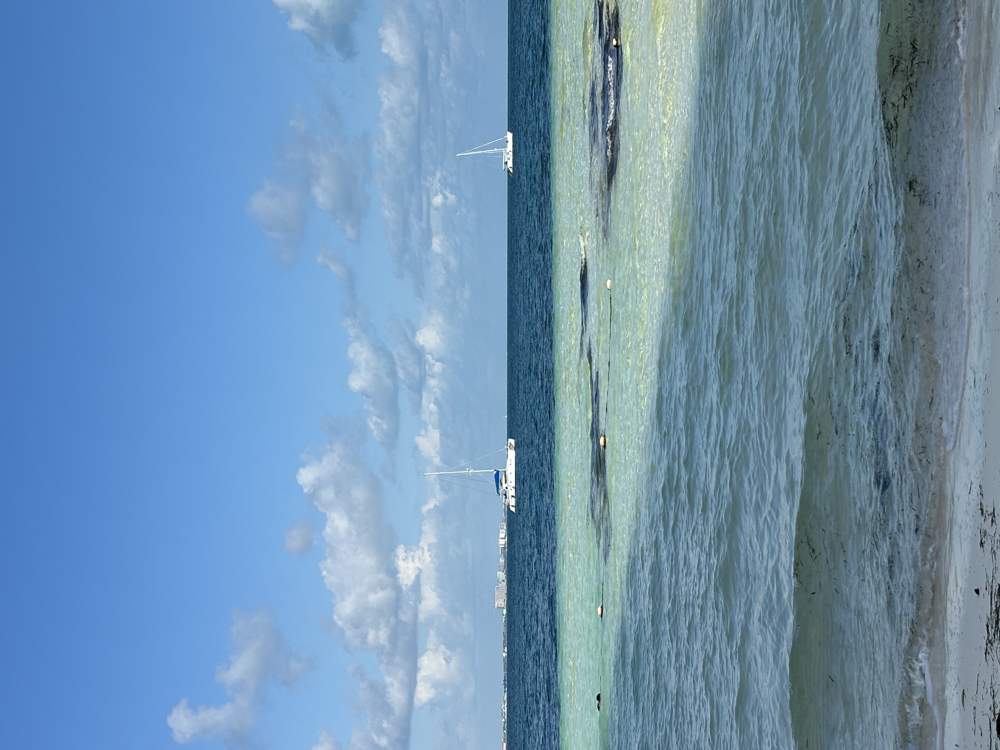
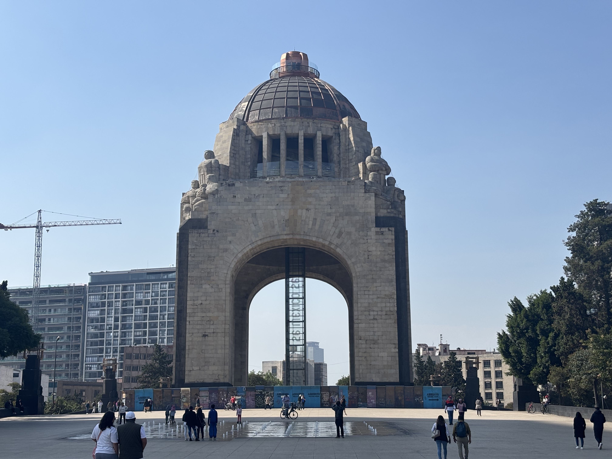
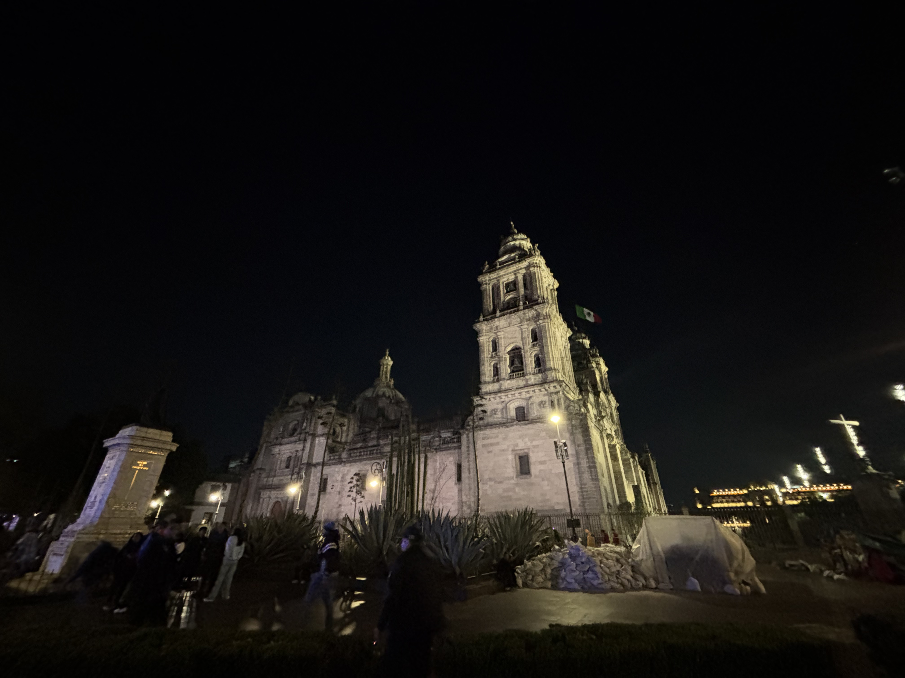
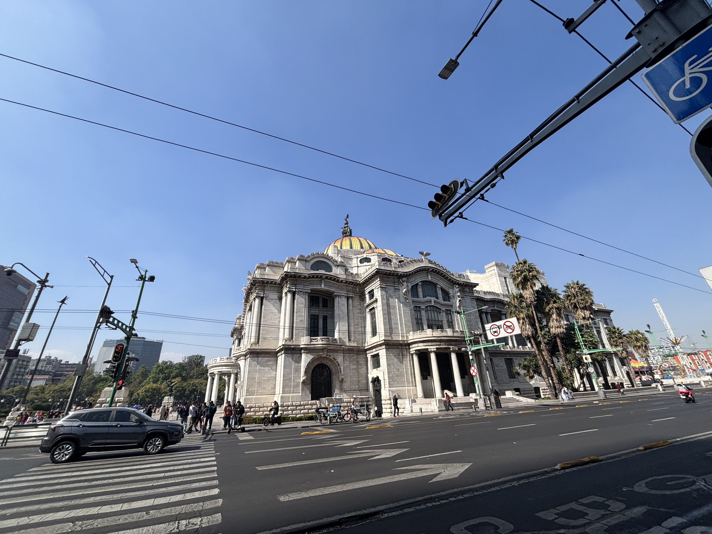
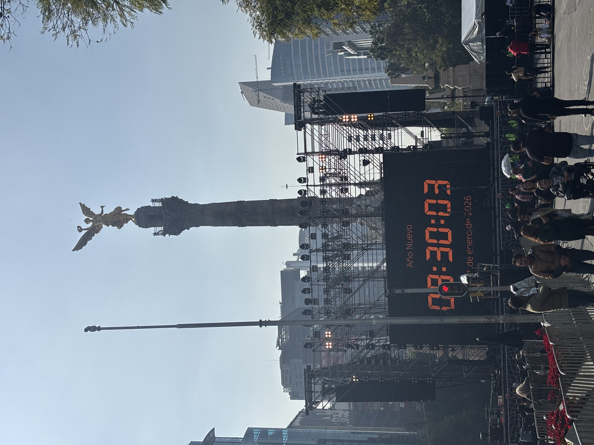
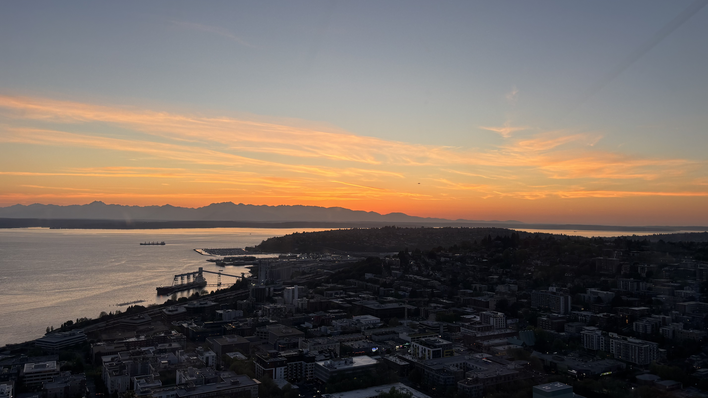
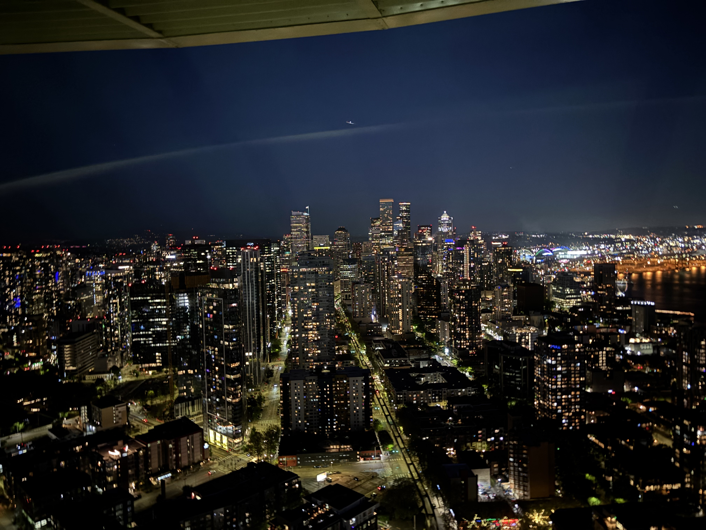
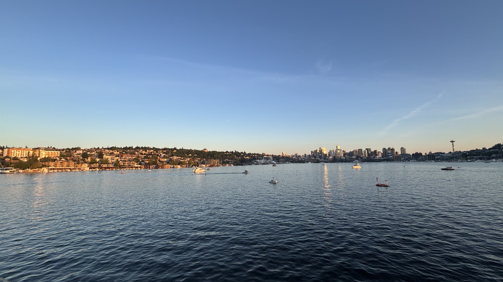
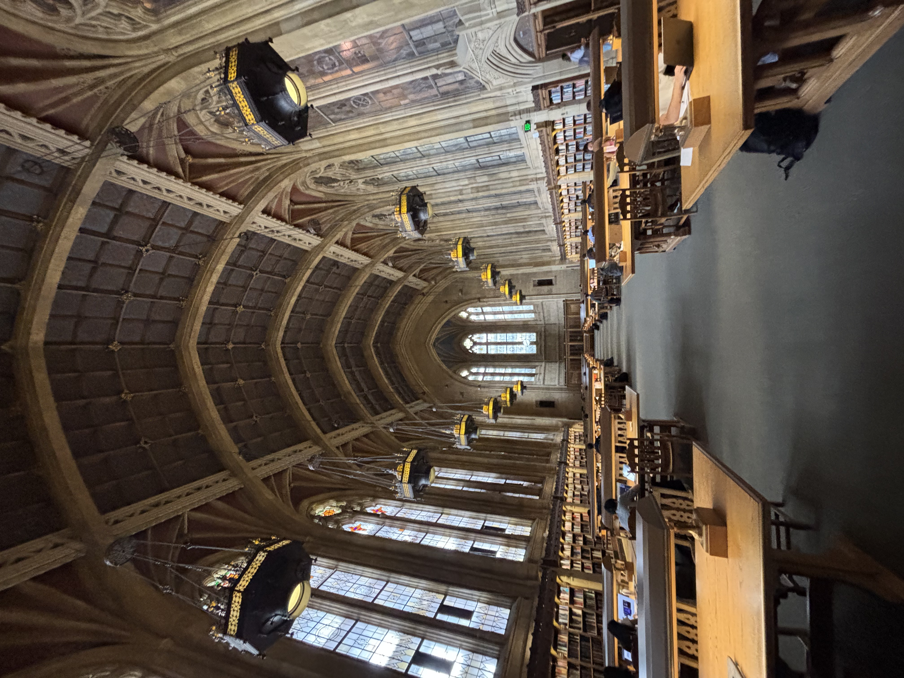

Mexico / Jan 2026
Chichen Itza
Stone steps, open sky, and the scale of history in one frame.
Travel journal
A small photo journal for trips, city walks, food, skylines, water, and the kind of light that makes a place stay in my head after I leave.
Mexico / January 2026
A January album with architecture, water, food, a cenote, and Chichen Itza.

Stone steps, open sky, and the scale of history in one frame.

Cool water, hanging roots, and a quiet circle of blue.

Clear blues and soft clouds from a beach day.

Gold on the water at the edge of the day.

A table full of color, texture, and travel-day appetite.

City scale, symmetry, and afternoon light.

Architecture glowing against a dark sky.

A busy square, a statue, and bright midday blue.

Street corners and buildings passing by in the sun.

A travel marker near boats, color, and open air.

A vertical city moment with time stamped into the scene.

Stone, palms, and the calm of a warm evening.
Seattle / May 2026
A May album from Seattle: sunny icons, city views, sunset water, and museum-like interiors.

A bright waterfront landmark stretching into clear blue.

Warm sky, quiet water, and a perfect evening gradient.

City lights threaded through a dark blue night.

Flowers, blue sky, and the Space Needle framed from below.

Colorful glass shapes reaching upward in soft indoor light.

Still water and a calm city edge at golden hour.

Stadium shapes, clock tower, and a bright walk through the city.

Lines, levels, and warm architectural texture indoors.

A tilted glimpse of streets, water, and buildings from above.